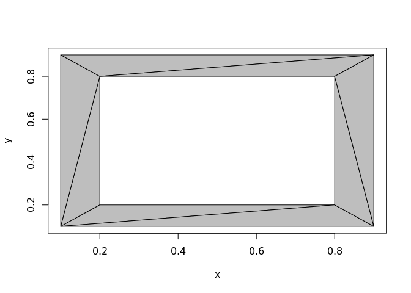

The goal of rearcut is to triangulate polygons using the Ear clipping algorithm. This is also referred to as ear cutting and this package directly uses the Mapbox Javascript library earcut.
The original motivation for rearcut is to triangulate polygons for silicate.
A polygon and one of its possible triangulations by ear clipping.
library(rearcut)
minpoly_xy <- na.omit(minpoly)
nas <- which(is.na(minpoly$x_))
## this is the "indicate where holes start" convention
hole_index <- nas - (seq_along(nas) - 1)
op <- par(mfrow = c(1, 2))
plot(minpoly)
polypath(minpoly, col = "grey", rule = "evenodd")
## a little inconvenient, but we flip between NA-separated rings
## and a denser encoding
idx <- earcut(minpoly_xy, holes = hole_index)
plot(minpoly_xy)
jk <- apply(matrix(idx, nrow = 3), 2, function(ix) polygon(minpoly_xy[ix, ], col = "grey"))
par(op)The basic function earcut for generic data is to be called with x/y coordinates in x (using the grDevices::xy.coords conventions) and an optional marker index of where holes are.
## example data from polypath
## rather than separate rings by NA we indicate those positions
## (here the hole starts at 5 and is the only one)
x <- c(.1, .1, .9, .9, .2, .2, .8, .8)
y <- c(.1, .9, .9, .1, .2, .8, .8, .2)
library(rearcut)
ind <- earcut(cbind(x, y), holes = 5L)
rearcut:::plot_tri(x, y, ind, col = "grey")
The idea is that more specialist contexts will wrap this lower level.
More examples.
A polygon data set from the Mapbox test suite.
txt <- readLines("https://raw.githubusercontent.com/mapbox/earcut/master/test/fixtures/water-huge.json")
library(dplyr)
#>
#> Attaching package: 'dplyr'
#> The following objects are masked from 'package:stats':
#>
#> filter, lag
#> The following objects are masked from 'package:base':
#>
#> intersect, setdiff, setequal, union
x <- jsonlite::fromJSON(txt) %>% purrr::map_df(tibble::as_tibble, .id = "poly")
x <- x %>% filter(poly == 1)
tri <- earcut(x[c("V1", "V2")])
rearcut:::plot_tri(x$V1, x$V2, tri)A geographic data set, the outline and internal waters of Tasmania’s main island.
taslakes_xy <- na.omit(taslakes)
nas <- which(is.na(taslakes$x_))
## this is the "indicate where holes start" convention
hole_index <- nas - (seq_along(nas) - 1)
idx <- earcut(taslakes_xy, holes = hole_index)
plot(taslakes_xy, type = "n")
jk <- apply(matrix(idx, nrow = 3), 2, function(ix) polygon(taslakes_xy[ix, ], col = "grey", border = "#00000044"))
Installation
Rearcut may be installed from Github.
## install.packages("devtools")
devtools::install_github("hypertidy/rearcut")Please note that this project is released with a Contributor Code of Conduct. By participating in this project you agree to abide by its terms.